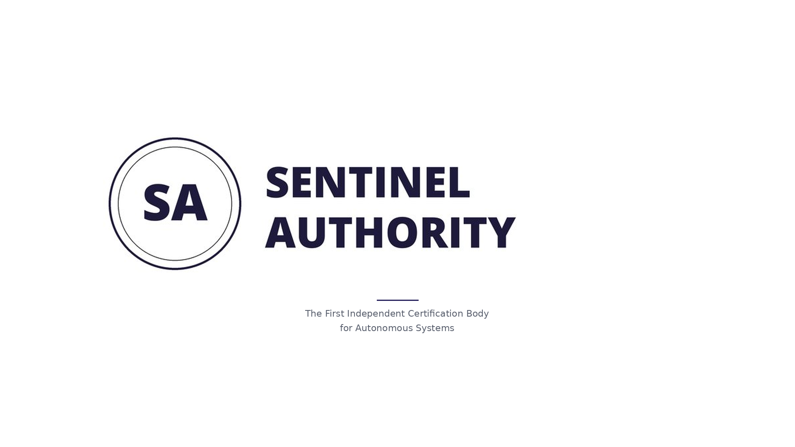

Operational Design Domain Conformance
Independent conformance assessment for autonomous systems. Operational boundaries verified. Runtime assurance enforced.
Autonomous systems declare operational boundaries. Sentinel Authority verifies they cannot exceed them.

Select Your Path
ODDC assessment serves developers, operators, regulators, and institutional buyers. Each has a distinct interest in verified boundary enforcement.
Autonomous systems are deployed based on manufacturer self-attestation. No independent mechanism verifies that runtime boundary assurance is architectural and active.
ODDC formalizes that missing category.
Systems Within Scope
ODDC conformance assessment applies to systems exhibiting one or more of the following characteristics.
ENVELO Interlock
An independent runtime execution gate between an autonomous system and the environment it affects. Verified by Sentinel Authority.
The ENVELO Interlock operates external to the governed system and cannot be modified or disabled by the model. All autonomous actions pass through the interlock prior to execution.
Systems with alternate execution paths — including direct actuator or API access — are ineligible for conformance assessment.
Closed and proprietary systems remain certifiable. Sentinel Authority does not require access to internal model architecture or training data.
ENVELO enforces declared operational boundaries at the execution layer. Sentinel verifies that enforcement is architectural, active, and non-bypassable.
Systems lacking a non-bypassable execution control layer fall outside the scope of conformance assessment.
Contact us to incorporate ODDC conformance assessment into your procurement evaluation criteria.
A Mechanism Existing Frameworks Do Not Provide
Current regulatory approval processes for autonomous systems rely on manufacturer self-assessment. No independent mechanism exists to verify that runtime boundary enforcement is architecturally present and active at the moment of execution. ODDC formalizes that missing category.
ODDC conformance cuts both ways. It provides verified differentiation for compliant operators — and produces a tamper-evident public record of non-conformance for those who are not.
Regulatory Integration Inquiry →Why Self-Attestation Is Not Enough
Across autonomous and AI-enabled systems, the same structural failure has recurred: operators declared operational boundaries that their systems exceeded — without independent verification that enforcement was architecturally active at runtime.
In each case, the boundary existed on paper. What was absent was an independent, non-bypassable architectural mechanism that verified enforcement at the moment of execution — and produced a tamper-evident record that regulators, insurers, and courts could rely on. That is precisely the gap ODDC and ENVELO exist to close.
Deployment Environment
Autonomous systems are deployed without verified runtime assurance. ODDC formalizes that missing category of verification.
What ODDC Does Not Certify
ODDC conformance assessment is limited to runtime boundary assurance.
Access Isolation Model
The interlock introduces no inbound access paths and no remote execution capability.